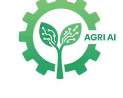

AgriVerse
AI Farmer Advisory
Ask your farming questions — get actionable AI advice
Crop Health Monitoring
Real-time crop health signals and fertilizer suggestions.
Pest & Disease Detection
Image-based pest alerts and step-by-step remedies.
Market Price Analysis
Get the best time and place to sell your crop.
Testimonial
"Euge perment alio un umnat system robust and helpful!"